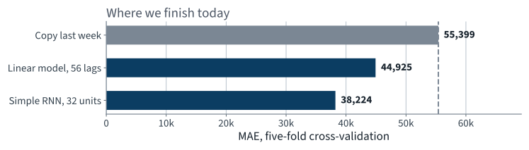
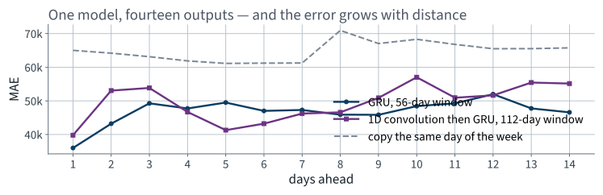
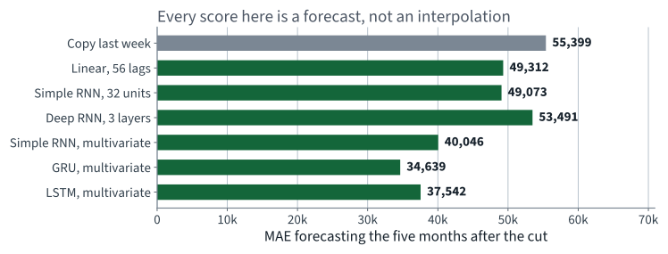

Chicago transit ridership
Lecture 16 Gé\;ron Ch. 13
Applications of Machine Learning
BSc Mathematics of Artificial Intelligence ·\; Third year
Lecture 15 established the ground rules and a number to beat:
No new derivation today. Lecture 11’s variance argument is the one that applies, unrolled through time instead of down layers — which is exactly why the gates exist. examinable the architectures, and what each gate is for.
First twenty minutes
20 minutes ·\; examinable
one step of a recurrent layer
The state is the only route by which anything before step $t$ reaches step $t$. Its width is therefore a budget: whatever the network needs to remember has to fit in $\mathbf{h}$.
A linear model on 56 lags has 56 weights. Take 365 lags and it has 365 — each fitted from the same amount of data, each learning one number about one position.
$\mathbf{h}_t$ is everything the network has decided to remember about $x_1 \dots x_t$.
Which is also the honest limit: if the task needs more bits than the state has, no amount of training supplies them.
You could. Flatten the 56 values and put a multilayer perceptron on top. It would work.
The same argument as convolution against dense layers on images, transposed from space to time.
A neuron that, at every step, receives the input and its own output from the previous step.
The hidden state is a function of every input so far. That is the memory.
Draw the same cell once per time step and you get a network 56 layers deep — but with one set of weights, reused.
That second consequence is why $\tanh$ rather than ReLU: a bounded activation keeps the repeated product from exploding.
| Shape | Input | Output | Example |
|---|---|---|---|
| sequence to vector | a sequence | one value | today's model |
| vector to sequence | one value | a sequence | a caption from an image |
| sequence to sequence | a sequence | a sequence | a forecast at every step |
| encoder–decoder | a sequence | a sequence | translation |
We build the first today. The third appears in the next lecture, and the fourth in two applications' time.
Unroll the network over the window and it becomes a deep feed-forward network whose layers share their weights. Then differentiate it exactly as Lecture 10 taught — nothing new is needed.
Initialisation cannot fix this the way it did in Lecture 11, because there the layers were independent. Something has to change in the cell itself.
import torch.nn as nn
class SimpleRnn(nn.Module):
def __init__(self, input_size=1, hidden_size=32, output_size=1):
super().__init__()
self.rnn = nn.RNN(input_size, hidden_size, batch_first=True)
self.head = nn.Linear(hidden_size, output_size)
def forward(self, X): # X: [batch, time, series]
outputs, last_state = self.rnn(X)
return self.head(outputs[:, -1]) # only the final step
batch_first=True because our batches are
[batch, time, series]. Without it the module silently reads the first
dimension as time.
outputs[:, -1] is the hidden state after the final time step.
Everything the model knows about the window has to fit in those 32 numbers.
model = SimpleRnn()
loss_fn = nn.HuberLoss(delta=0.05)
opt = torch.optim.SGD(model.parameters(), lr=0.05, momentum=0.9)
loader = DataLoader(train_set, batch_size=32, shuffle=True)
for epoch in range(200):
model.train()
for Xb, yb in loader:
opt.zero_grad()
loss_fn(model(Xb), yb).backward()
opt.step()
The same five lines as Lecture 12, unchanged.
zero_grad is still not optional and still fails silently.
Quadratic near zero, linear far away. We are optimising a proxy for MAE, and minimising the absolute error directly gives a gradient that never gets smaller as you approach the optimum.
The metric and the training loss are allowed to differ. Lecture 2 said so\; here is the case.
DataLoader(train_set, shuffle=True) shuffles the
windows. It does not shuffle the values inside a window
— the sequence within each row is untouched.
Gradient descent expects the instances in a batch to be independent draws. Presenting 56 consecutive days as a batch, in order, gives 56 highly correlated gradients and a noisier step, not a smoother one.
Read that sentence again in the next lecture.
38,224
Five folds, shuffled, seed 42 — identical protocol to the linear model.
Against 55,385 for copying last week on the same folds and 44,925 for the linear model. That is 31.0% better than the baseline, and 15% better than the linear model on the same folds.

Two models, both comfortably past the baseline, on identical folds.
And the assumption, stated rather than left implied: these folds are shuffled, so none of these numbers is a forecast. Lecture 15 measured what that is worth. They are comparable with each other because the folds are identical — and with nothing else. Every forward number in this lecture is on the ladder.
The method
35 minutes ·\; examinable
| Shape | In | Out | Example |
|---|---|---|---|
| sequence to vector | a sequence | one value | forecast one step; classify a review |
| vector to sequence | one value | a sequence | caption an image |
| sequence to sequence | a sequence | a sequence | forecast seven days; translate |
| encoder–decoder | a sequence | a sequence, after reading all of it | translate properly |
The cell is the same in all four. What changes is where you take the output from — the last state, every state, or a second network fed by the last state — and that choice is the architecture.
return_sequences=False — one output, from the final
state. Sequence to vectorreturn_sequences=True — one output per step. Needed
for every layer that feeds another recurrent layer, or you hand the next
layer a vector where it expects a sequenceDense on top applied at every step is
time-distributed: the same weights at every position, which is
the recurrent idea again, one level upreturn_sequences=True
on the first. It does not raise: the second layer receives a
length-one sequence and trains happily on almost no information.
The symptom is a model that is inexplicably no better than a shallower one.
Squared error punishes a large miss quadratically, which on a series with occasional shocks means a handful of days dominate the gradient.
| Loss | Behaviour |
|---|---|
| MSE | smooth everywhere; dominated by outliers |
| MAE | robust; gradient is constant, so it converges slowly near the optimum |
| Huber | quadratic near zero, linear beyond — both properties, one knob |
The choice is the same argument as RMSE against MAE in Lecture 2, and it has the same answer: it depends on what an error costs the operator, and that is a question for them and not for us.
Consecutive training windows share almost all their content: a 56-day window starting on day $t$ and one starting on day $t+1$ differ in two values out of fifty-six.
A model evaluated in differenced units can look excellent and mean nothing: predicting a change of zero every day is nearly right, and it is the naive forecast wearing a disguise.
| Strategy | How | Weakness |
|---|---|---|
| Recursive | predict one step, feed it back, repeat | errors compound\; the model never trained on its own output |
| Direct | a separate model per horizon | $k$ models, and none of them shares what the others learned |
| Sequence-to-sequence | one model, $k$ outputs at once | more to fit, and the outputs are not independent |
All three are defensible and all three must be evaluated the same way: forward in time, at the horizon you actually need. A model that is excellent one step ahead and useless seven steps ahead is not a good model if the operator plans a week in advance.
Training a sequence-to-sequence model, you can feed the decoder the true previous token or its own previous prediction.
| Trains | At prediction time | |
|---|---|---|
| True token (teacher forcing) | fast and stable | the model has never seen its own mistakes |
| Own prediction | slow, and early training is noise | matches deployment |
Run one recurrent layer forwards and another backwards, and concatenate their states. Every position then sees the whole sequence.
Ask one question: at prediction time, do I have the rest of the sequence? For text classification, usually yes. For forecasting, never.
self.rnn = nn.RNN(input_size, hidden_size, num_layers=3,
batch_first=True)
One argument. Three recurrent layers stacked, the output of each feeding the next.
| Model | Forecast MAE |
|---|---|
| Simple RNN, one layer | 49,073 |
| Deep RNN, three layers | 53,491 |
It got worse.
Report the negative result. A ladder of improvements in which every rung works is a ladder somebody edited.
We have been forecasting rail from rail alone, while a bus series sits unused beside it — and a day-type column we established is known in advance.
mulvar = df[["rail", "bus"]] / 1e6
mulvar["next_day_type"] = df["day_type"].shift(-1) # known in advance
mulvar = pd.get_dummies(mulvar, dtype=float) # 5 columns
assert list(mulvar.columns) == ["rail", "bus", "next_day_type_A",
"next_day_type_U", "next_day_type_W"]
The architecture changes by one number: input_size=5.
shift(-1)The previous lecture spent ten minutes on a random split that let a model train on the rows surrounding what it was scored on. This one reads the future deliberately.
This is the one question about leakage that no static check can answer for you. It is not a property of the code\; it is a property of the world.
| Model | Forecast MAE | vs copying last week |
|---|---|---|
| Copy last week | 64,815 | — |
| Simple RNN, rail only | 49,073 | 24% better |
| Simple RNN, five inputs | 40,046 | 38% better |
Eighteen per cent off the error for one line of feature engineering and one changed constructor argument.
Most of it is the day type. The network no longer has to infer that a holiday is coming from the shape of the previous eight weeks — which is impossible — because we told it.
The operations team also wants a fortnight. Two ways:
Feed the forecast back
Predict day $t{+}1$, append it to the window as though it had happened, predict $t{+}2$. Errors accumulate.
Predict all fourteen at once
Change the output layer to fourteen units and the target to a vector. One model, no accumulation.
target = self.series[end : end + 14, 0] # 14 values, not 1
model = GruModel(input_size=5, hidden_size=32, output_size=14)
At step 0 the model outputs the forecasts for steps 1 to 14\; at step 1, for steps 2 to 15\; and so on. The target is a sequence of windows rather than a single vector.
def forward(self, X):
outputs, _state = self.rnn(X)
return self.head(outputs) # every step, not outputs[:, -1]
After training, only the last step's output is used.

The error grows with distance, from 35,997 at one day to 46,586 at fourteen — and stays below the no-model baseline throughout.
Lecture 11 introduced clipping as one repair among seven. On a recurrent network it is not optional.
Clip by global norm, not per parameter: the direction of the update is information and only its length is the problem.
The repair
20 minutes ·\; examinable
A plain cell multiplies the state at every step:
so over $T$ steps the gradient carries $T$ copies of the same matrix, and Lecture 11’s argument applies with the extra force that it is one matrix rather than many independent ones.
| Gate | Equation | What it decides |
|---|---|---|
| forget $\mathbf{f}_t$ | $\sigma(\cdot)$ | how much of the old cell state to keep |
| input $\mathbf{i}_t$ | $\sigma(\cdot)$ | how much of the candidate to write |
| candidate $\tilde{\mathbf{c}}_t$ | $\tanh(\cdot)$ | what to write, if anything |
| output $\mathbf{o}_t$ | $\sigma(\cdot)$ | how much of the cell state to expose as $\mathbf{h}_t$ |
Every gate is a sigmoid of the same two inputs $(\mathbf{x}_t, \mathbf{h}_{t-1})$ with its own weights, so a sigmoid in $[0,1]$ is a soft switch and the network learns when to open it. Four gates means roughly four times the parameters of a plain cell.
examinable State what each gate does and why the cell-state update is additive.
Still additive, still a near-identity path when $\mathbf{z}_t$ is small — the property that mattered, kept, with about three quarters of the parameters.
Unrolled over 56 steps, the network applies the same weight matrix 56 times. The gradient carries a product of 56 Jacobians.
The repair is not a better initialisation. It is a cell that can choose what to keep.
| Model, all five inputs | Forecast MAE | Training MAE |
|---|---|---|
| Simple RNN | 40,046 | 27,035 |
| LSTM | 37,542 | 24,540 |
| GRU | 34,639 | 20,356 |
The GRU wins on the forecast, and the second column says why to be careful: it fits the training rows 25% better than the plain cell but the forecast only 14% better. That gap is overfitting, and it is the next thing to attack.
Both cells are Chapter 13. Neither is a large model: a few thousand parameters.

From 64,815 to 34,639 — 47% better than doing nothing, and every bar is a forecast on the same days.
A one-dimensional convolution with stride 2 halves the sequence before the recurrent layer sees it, so the same number of recurrent steps covers twice as much history.
self.conv = nn.Conv1d(input_size, hidden_size, kernel_size=4, stride=2)
self.gru = nn.GRU(hidden_size, hidden_size, batch_first=True)
# time is a spatial dimension for Conv1d, so permute before and after
| Model, 14 outputs | MAE at $t{+}1$ | MAE at $t{+}14$ |
|---|---|---|
| GRU, 56-day window | 35,997 | 46,586 |
| Conv then GRU, 112-day window | 39,792 | 55,148 |
On this series the extra history does not pay for the resolution it costs. Reported because we measured it, not because it won.
A convolution with gaps: stack layers whose dilation doubles — 1, 2, 4, 8, 16 — and the receptive field grows exponentially with depth while the parameter count grows linearly.
| Recurrent | Dilated convolution | |
|---|---|---|
| Along the sequence | sequential | parallel |
| Reach | in principle unbounded | fixed by depth and dilation |
| Gradient path | through every step | through $\log T$ layers |
It must be causal: pad on the left only, so no output depends on a later input. A symmetric convolution here is Lecture 15's leak again, in a third costume.
| Left out | Where it belongs |
|---|---|
| SARIMA and its grid search | Chapter 13 — in scope, cut for time |
| WaveNet: stacked dilated convolutions | Chapter 13 — in scope, cut for time |
| Layer normalisation inside a cell\; dropout between layers | Chapter 13 |
| Attention over the window | Chapters 14–15, in two lectures |
| Prediction intervals rather than point forecasts | outside the book |
Thirty-five minutes buys four improvements measured end-to-end. It does not buy eight described end-to-end and none measured.
| Forecast | What we reported | What it does |
|---|---|---|
| Copy last week | 55,385 | 64,815 |
| Linear, 56 lags | 44,925 | 56,446 |
| Simple RNN | 38,224 | 49,073 |
| GRU, five inputs | — | 34,639 |
The two middle rows are the same models measured twice. The bottom row is the model we would actually deploy, and it was never measured the wrong way.
The final number is better than the one we committed to — but we reached it by first admitting that the committed one was fiction.
It is 47% better than the system a transit authority could run with no data scientist at all, and its typical miss is around 10.4% of the day it is forecasting — against the naive forecast's 12.0%, measured the same way. (As a share of a mean day it is 5.5%, which is a different quantity and not comparable with Lecture 15's figure.)
Note what that sentence contains: the protocol, the baseline, the rows, and where the gain comes from. Four things the number alone does not carry.
Fit on everything to the end of 2019. Forecast the four months from March 2020, which nobody in this room needs reminding about.
| MAE | |
|---|---|
| The linear model, trained to the end of 2019 | 84,380 |
| Copying last week, on the same 122 days | 36,282 |
| The actual mean level over that period | 141,404 |
The model is 2.3 times worse than doing nothing, and its error is six tenths of the entire level.
Run the same shuffled five-fold cross-validation over 2016–2021, spanning the collapse:
36,554
It reports a better number than before, because the post-2020 days are easier to interpolate: they are flat, low, and surrounded by other flat low days that are in the training set.
March 2020 is not a leak and it is not the model's fault. No forecaster could have produced it from eight weeks of history, and copying last week wins only because it adapts within a week of the collapse.
Which is why a deployed forecaster is monitored against its own naive baseline, continuously. If the margin disappears, something has changed in the world.
Six questions. The third is the leak from Lecture 2, meeting the leak from today.
beyond the syllabus, for context All three are standard practice and none is examinable. They are here so you know they exist when a real forecasting problem asks for them.
| Question | Why it decides whether the number means anything |
|---|---|
| At what horizon? | one step ahead is a different problem from seven |
| Against which baseline? | seasonal-naive, not the mean — Lecture 15 |
| On which protocol? | rolling origin, and how many folds |
| With what spread? | one origin is one sample |
| In which units? | differenced or not; scaled or not |
A recurrent network that beats the naive forecast by less than the fold-to-fold spread has not beaten it. This is the paired comparison of Lecture 2, and it applies unchanged.
Steps 2 and 3 come before step 4 for the same reason they did in Lecture 2: after you have a number, you will not choose the protocol that makes it look worse.
The sequential dependence is not an implementation detail that a better library removes.
On a 56-step window nobody cares. On a document of ten thousand tokens it is the binding constraint, and it is the practical reason — more than the gradient — that attention replaced recurrence.
| unrolling | writing the recurrence out as a deep network with shared weights |
| BPTT | backpropagation applied to the unrolled network |
| truncated BPTT | unrolling only the last $k$ steps, to bound cost and gradient |
| cell state | an LSTM's second, additively-updated memory |
| teacher forcing | feeding the true previous token during training |
| exposure bias | the mismatch that creates at prediction time |
| causal | no output depends on a later input |
If you can say why an additive update helps and a multiplicative one does not, you have the examinable half of this lecture.
The first six are Lecture 15. The seventh is today.
| Topic | Chapter |
|---|---|
| Stationarity, differencing, seasonality, moving averages | 13 |
| ARMA, ARIMA and SARIMA | 13 |
| Splitting a time series across time | 13 |
| Deep RNNs, multivariate inputs, several steps ahead, seq2seq | 13 |
| LSTM and GRU cells\; 1D convolution over sequences | 13 |
| Unstable gradients through depth | 11 |
| Cross-validation and its assumptions | 2 |
And its consequence, which is the honest summary of the lecture: gates make long-range dependence trainable, not easy. Position 400 is still four hundred steps away, and that is the problem Lecture 18 removes rather than mitigates.
Not presented — for afterwards
five, in the style of the written paper
Solutions on Lecture 17’s deck.
Solutions on Lecture 17’s deck.
The five set at the end of Lecture 15
not part of this lecture
1. For a stationary series, $\operatorname{Var}(X_t - X_{t-h}) = 2\gamma(0)(1-\rho(h))$. State the condition on…
$\rho(h) < 1/2$.
2. Explain why the seasonal-naive forecast is hard to beat on daily ridership, in terms of the autocorrelation…
$\rho(7)$ is high, so the lag-7 difference is close to white noise — and copying last week is the model that assumes it is.
3. State why MAPE is the wrong metric for transit ridership, using a specific day as the example.
It divides by the truth, and holiday ridership is a fraction of a working day’s, so the same absolute miss on Christmas counts several times what it counts on an ordinary weekday.
4. A cross-validated forecast uses KFold(shuffle=True) and reports a good score. Name the two conditions the…
No training row may come after a test row, and none may be adjacent to one.
5. In March 2020 the series level falls by three quarters and the model stops working. State whether this is a…
Neither — the protocol was correct and the world changed. It implies monitoring, with a written trigger.
Lecture 17 ·\; Gé\;ron Ch. 14
Softmax, cross-entropy and logits — derived, and why the loss consumes
logits rather than probabilities
Subword tokenisation, and what an embedding space encodes
A recurrent classifier, then the same architecture with pretrained embeddings
Run the Lecture 16 notebook first